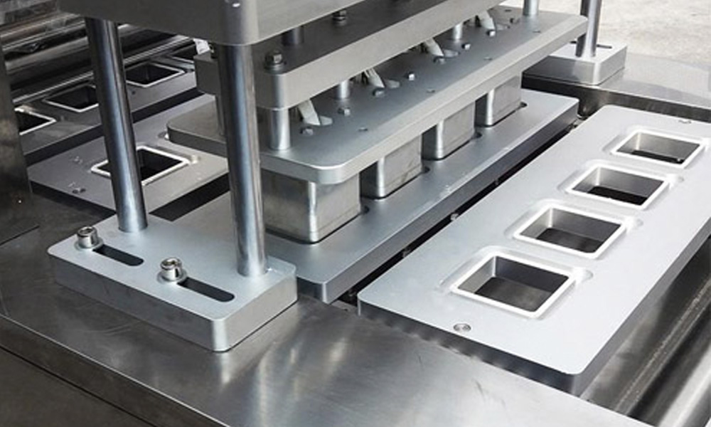

Ремонт трейсилерів: відновлення нагрівальних та запечатувальних елементів
конструкції

У процесі щоденного використання нагрівальних та запечатувальних механізмів відбувається їхня поступова
поломка. Природне зношування комплектуючих призводить до таких негативних наслідків:
- порушений процес та якість формування
- нещільне запечатування лотків
Виконуючи оперативний та якісний ремонт трейсилерів, досвідчені фахівці допоможуть відновити функціональні
особливості нагрівальних та/або пластин, що запечатують, а у разі неможливого відновлення – проведуть їх заміну.
Наша компанія гарантує не тільки високоякісне складання всієї конструкції, але і виконання поставлених завдань
точно в зазначені терміни. Таким чином, можна уникнути небажаного простою техніки на виробництві, а тому
підприємство точно не зазнає збитків.
Додатково наші майстри пропонують послугу капітальний ремонт трейсилерів, в яких вийшло з ладу відразу кілька
комплектуючих або одна, але життєво важлива деталь.